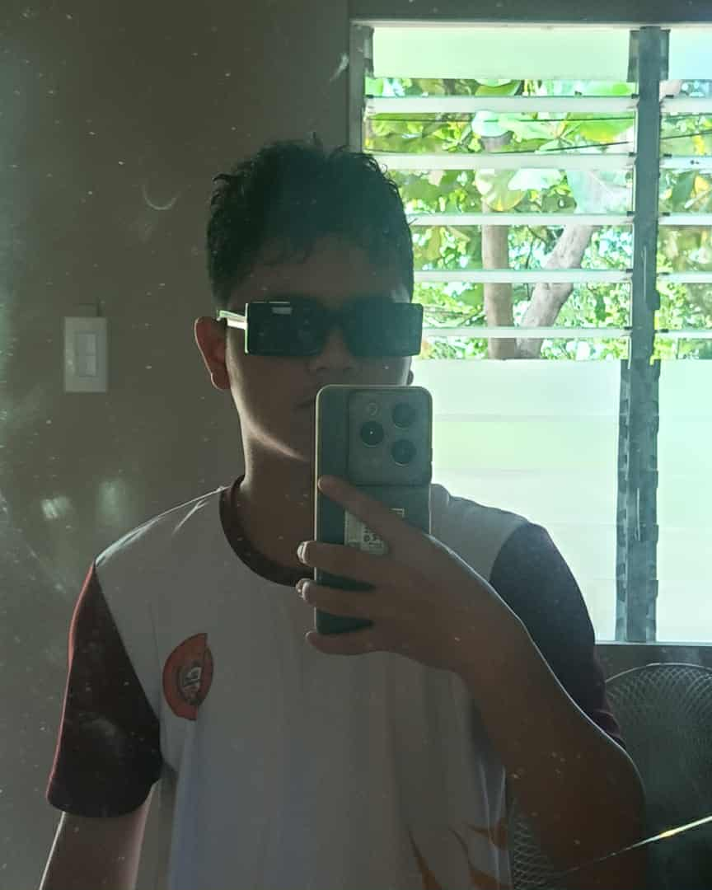

You cant control the wind but you can adjust your sail

Hi, I am Jevie John Harabay. I started this blog to share my thoughts, experiences, and little lessons from everyday life. I enjoy Singing especially rap songs , and writing music helps me express myself while connecting with the music. This space is simply about my journey—growing, learning, and appreciating the small things that make life meaningful.
My Favorite Artist
My Idols
Rap
Flow G
Geo Ong
Hi, I’m Jevie John Harabay. I started this blog to share my thoughts, experiences, and the things that inspire me in life. My biggest inspiration is my family—they motivate me to keep going, work hard, and dream bigger every day.
As someone who loves rap, I also look up to artists like Geo Ong and Flow G. I admire how they tell real stories through their music and inspire people with their words. Their passion and honesty push me to express myself more and to see rap as more than just music—it’s a voice, a message, and a way to influence others positively.